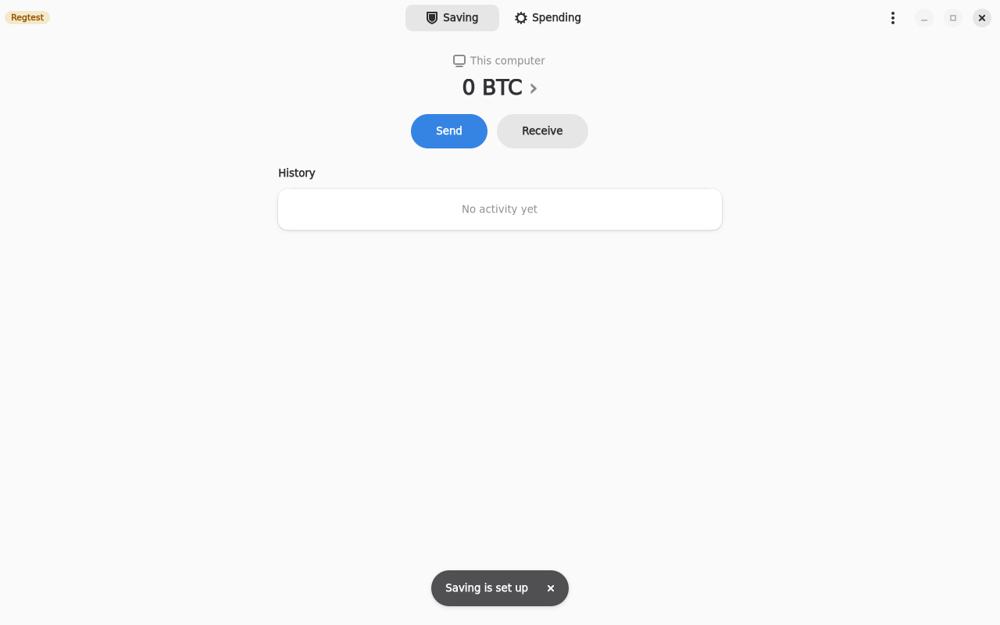
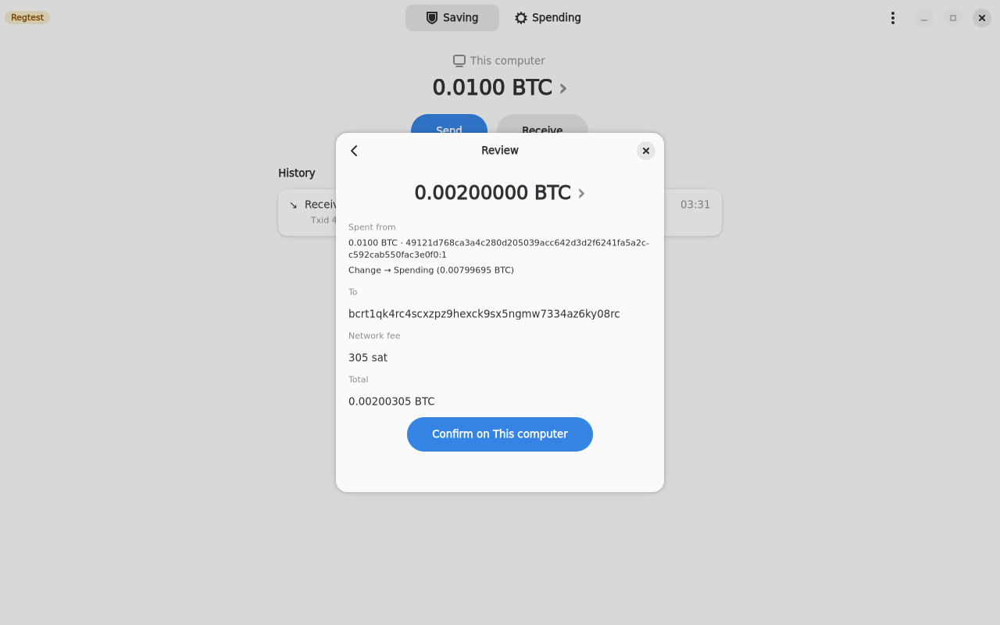
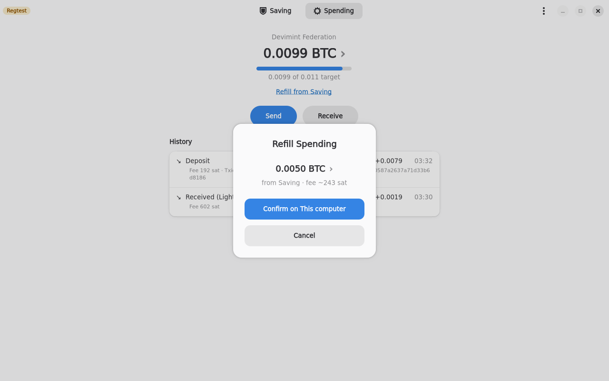
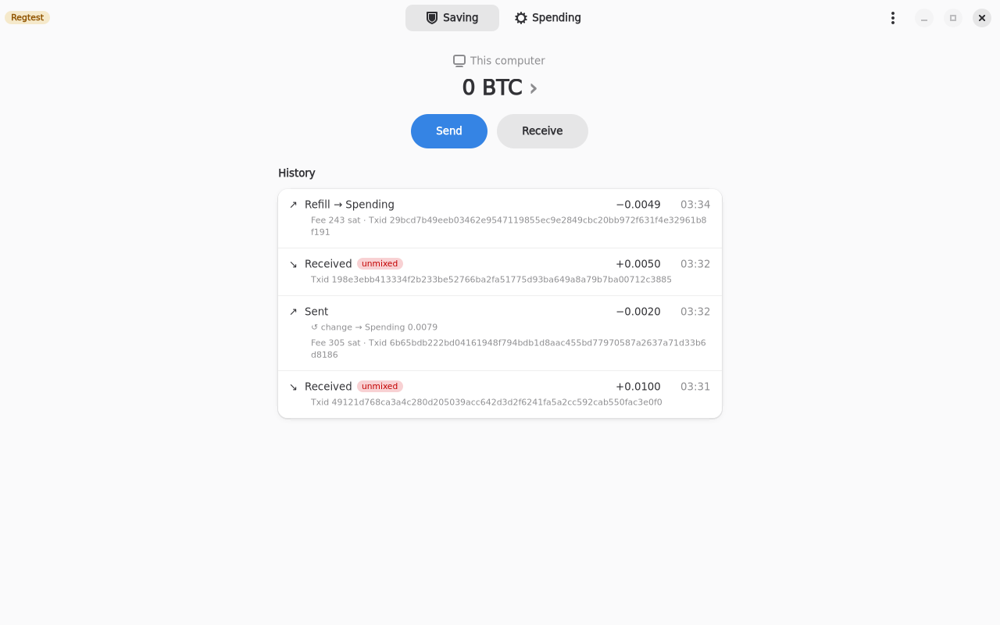
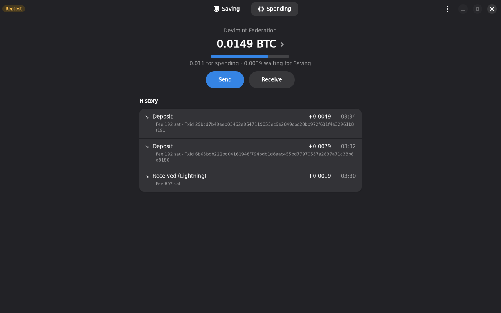
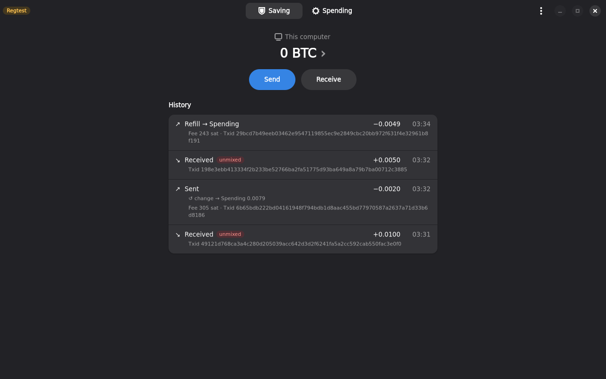
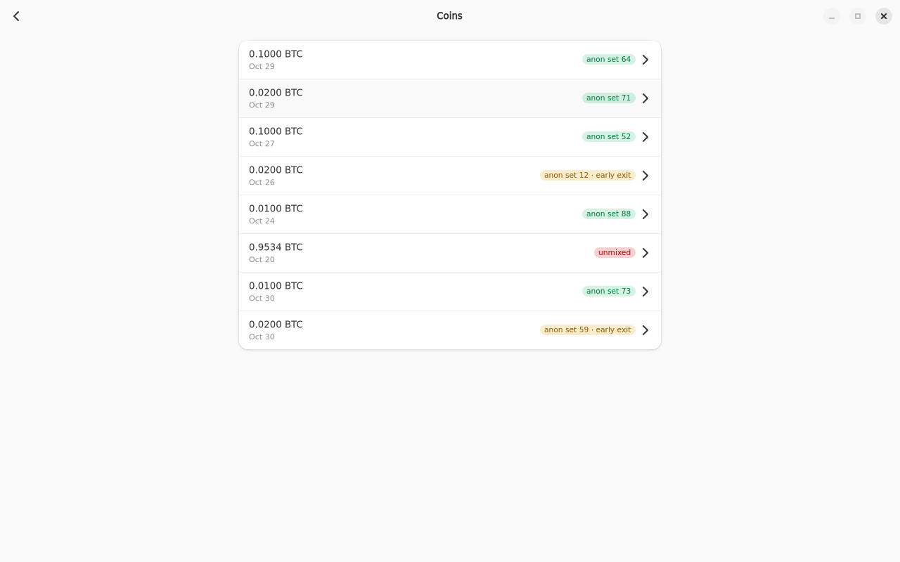

Fedimix
An ecash Spending wallet plus a cold Saving wallet, with privacy exits between them.
4 min demo. First 2:16 is the real app on a local regtest federation. The rest is a simulation on the demo backend, and says so on screen.
The problem and the idea
Bitcoin on chain is easy to trace. Coins you receive are linked to the coins you spend, and a hardware wallet does nothing about that. Mixing in a Fedimint federation helps, because ecash is fungible: nobody can tell which deposit funds which withdrawal.
Fedimix puts both sides in one app. Incoming coins are deposited into a federation (Spending), where you pay over Lightning or on chain. Anything above a target balance is split into common denominations and waits in a queue.
Each denomination leaves for cold storage (Saving) on its own, after a random delay that gets shorter as the number of other deposits it could be confused with grows. Change from cold spends flows back into the federation, so Saving never links to your spending.
How it works
Spending
Fedimint ecash. Lightning and on-chain. Keeps a target balance (default 0.05 BTC).
Saving
On-chain BDK wallet. A hardware wallet signs, or "This computer" if you have none.
- Deposit into Spending by Lightning or on chain.
- Above the target? The excess is split into denominations (1-2-5 series) and queued.
- Exit one denomination at a time, after a Poisson-timed random delay, once its anonymity estimate has grown. "Exit now" is always possible, and marked as a lower-privacy coin.
- Spend from Saving: the change goes to a fresh federation deposit address, back into Spending.
- Refill: when Spending is low, one click sends the smallest Saving coins that cover the gap into the federation. No change output.
Screenshots

Joined a real Fedimint 0.13 federation with an invite code.

Lightning receive: ecash arrives in Spending, gateway fee shown.

Saving set up on "This computer", keyed from the same recovery words.

Send from Saving: the review shows the change going to Spending.

The federation credits the change as a deposit in Spending.

Refill: Spending is below target, Saving coins move up, no change output.

Saving history, with the refill confirmed.

Spending in the dark theme.

Saving in the dark theme.

The exit queue: denominations, anonymity now and target.

A coin landed in Saving with a privacy tag ("anon set 73").

"Exit now (lower privacy)" shows the fee and warns.

Early exits stay labelled in Saving.
Exits-only video (102 s, simulated): exits-demo.mp4
Status, honestly
Built and tested
- Phases 1-3 against a local regtest federation
- Both fedimint 0.13 module generations
- Lightning and on-chain, Spending and Saving
- Change flow and Refill
In progress
- Phase 4 exits: work in the demo backend, in progress on the real backend
Not built
- Cover traffic and the tray (Phase 5)
- Restore from words inside the app
- Mainnet use
- Hardware wallets compile but have not been tried on a device